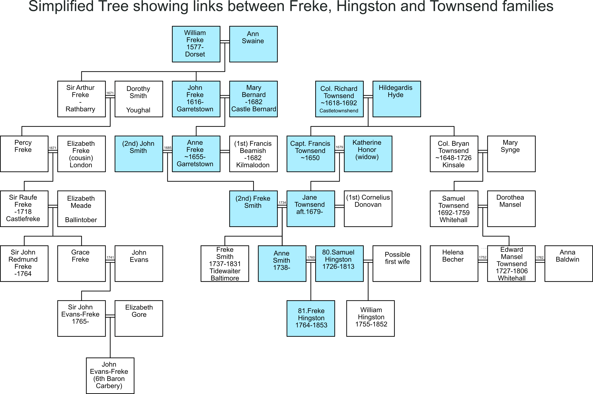
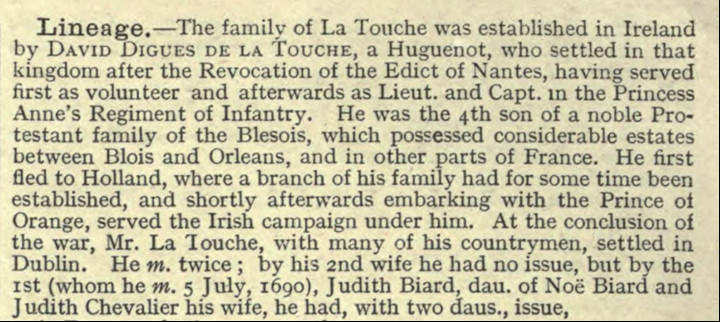

The Freke name is common in the HNC Hingstons from Whitehall , specifically in the descendants of 40. Alan and those of his uncle 80. Samuel. According to some it is merely an abbreviation for Frederick, but it is likely that it is more than this. It was quite common to name children after a famous or wealthy ancestor, or occasionally after a more distant relative. There are various family stories about connections with higher status families but the details have been lost. This page is a discussion of the connection between the Hingstons, the Frekes and the Townsend family.
There are a number of family stories. One is that the Freke Hingstons were named in honour of Castle Freke and the Freke family without any familial link, but another says that one of the ancestors was Chief of the English Coast Guards who eloped with a Miss Evans-Freke from Castlefreke, County Cork. Unsurprisingly, there are no such tales in the histories of the Evans-Freke families, and the story may have grown in the telling.
According to WEH , 80. Samuel Hingston was born at Whitehall in 1726. In about 1750 he married Ann Smyth. "By this marriage both the names of Freke and Townsend came into the Hingston family and also the first connection with the family of La Touche of Dublin. He settled in Whitehall and developed the mackerel fishery which his descendants still follow". He died in 1813.
It seems almost certain that there was some link to the Freke family and that it is most likely to be through Ann Smyth, who would have been born about 1730
The Freke family originally came from Sturminster Newton in Dorset. Their fortunes were founded by Robert Freke, Auditor and Teller of the Exchequer under Henry VIII. Such posts provided ample opportunities for wealth and advancement, and Robert acquired substantial holdings of land.
One of Robert's sons was William, born 1577. He married Ann Swaine from Sareen (probably Sarson) in Hampshire, and most of their children appear to have been born there. They moved, with their family, to Ireland and acquired a number of estates in West Cork in 1617, including Rathbarry, which was originally a 15th Century tower house belonging to the Barry family. In 1642, during the Eleven Years' War, the Freke family were forced to defend the castle from Confederate Irish forces during a sustained siege, which left it in ruin. A new building, CastleFreke, was built nearby on the same estate and became the family seat.
After several generations the family estates passed to Grace Freke who married John Evans and they took the name Evans-Freke. Their grandson John Evan-Freke became the 6th Baron Carbery .
There are various relevant listings about the Freke family.

The Townsends, like the Hingstons, were founded by an English army officer who come to Ireland during the Civil Wars. Colonel Richard Townesend (sic) served in the Parliamentary army in England, notably in Dorset which may have been the home of 4. Major James Hingston if the connection via the name Justinian is correct . He raised his own regiment that came to Ireland in 1647 (before Cromwell's arrival in 1649). He retired from service in 1654 and settled at Castletownshend in about 1655. He had an extensive family but the two that matter to us were a grandson Samuel Townsend (1692-1759) who acquired Whitehall, and a granddaughter Jane Townsend, born sometime after 1679.
Jane Townsend married twice. Her second husband, whom she married in 1734, was Freke Smith, the son of Anne Freke of Garretstown (the village adjacent to CastleFreke), and John Smith of Youghal. Jane and Freke had at least two children that we know of for certain, Mary Ann born in 1739 and Francis born in 1747, but there seems also to be another Freke Smith born in 1737, presumably a son, and there were probably other children. We believe that either Mary Ann, or another daughter Anne, is the Ann Smyth who married 80. Samuel Hingston in 1763, and that their son 81. Freke was born in 1764. Note that Samuel's eldest son William was born in 1755 according to WEH, which implies that Samuel must have been married before.
Most of this evidence has been assembled by David Cotcher, to whom I am grateful.
(Note the records use the spelling Smith and Smyth interchangeably for this family)
A record from Trinity College (Alumni Dublinenses 1924) shows Freke Smith, son of John, admitted in 1722 at age 19, which would mean born about 1703. Anne Freke was said to be born 1655 which would make her age 48 which is relatively old but possible. The TCD record says Freke Smith was born at Killmalody, County Cork which would be the parish of Kilmaloda where Anne Freke lived with her first husband Francis Beamish.
In a deed in 1742 (Vol 108 Page 25 No. 74438) the children of John Smith of Carrick, deceased, and Anne his wife are listed as Freke Smith, Elizabeth Conner, Sarah Harris with husband Bulkely Harris, Richard Smith and John Smith. They are parties to an agreement related to the land at Downeen. A deed for 3 plowlands and 1 gneeve of Downeen, leased by late John Smith from the Lord Bishop of Cork, was renewed by sons Richard Smith and John Smith. For payment of 50 pounds paid to Bulkely Harris, the children of the late John Smith, Freke Smith, Elizabeth Conner, and Sarah Harris, released to brothers Richard Smith and John Smith their rights to a share of the land.
This deed in 1742 confirms Freke Smith as one of the sons of John Smith and Anne his wife. It says, “John Smith of Carrick”, which would be the townland of Carrig, also known as Carrick, in the parish of Kilmaloda. This agrees with the TCD admission record showing Freke Smith born in Killmalody. Deeds for the Beamish family in the 1700s referred to Kilmaloda as Killmalody. So apparently at that time John Smith was leasing Downeen but living in Kilmaloda. Richard Smith, who may have been his oldest son, was referred to as being of Castle Downeen.
From the Marriage Licence Bonds: Freke Smyth married Jane Townsend in 1734; she was a first cousin of Samuel Townsend of Whitehall.
From the Townsend Family History:
Several entries in the Church of Ireland Parish Records of Ross Cathedral
1690–1823 (also available from transcription at Durrushistory.com) refer
to 'Mr Freke Smyth' and it is reasonable to assume that they refer to
Jane's second husband. The entries in chronological order are:
Freke Smyth and Jane Townsend could have had other children. The transcriptions do not cover all the years and they may have lived in other parishes at other times. It is possible that Mary Ann baptised 1739 is the Ann Smyth that married Samuel Hingston. However, it is possible (and quite likely) there was another daughter named Anne.
The name Freke was also used as a middle name in the Smyth family with at least two generations of John Freke Smyth, with one the son of Richard Smyth, being Freke Smyth’s first cousin. Prior to John Smith marrying Anne Freke, the connections between the Freke and Smith families go back to Sir Arthur Freke, who bought Rathbarry Castle, marrying Dorothy Smith, daughter of Sir Percy Smith of Youghal.
Records of the Journal of the House of Commons of the Kingdom of Ireland for 1773 listing officers of Customs and Excise gives Freke Smith as a Coast Officer, Crookhaven under the heading of Baltimore. This may mean he was posted at Crookhaven but reported to the Baltimore area.
The deed for Samuel Hingston leasing Middle Cunnamore in 1768, registered in 1776, says he was a Revenue officer at Baltimore at that time. This could be a connection for marrying Anne Smyth if her father may have worked at Baltimore at one time.
There was also another Freke Smith born about 1737 who worked at Baltimore, who could have been Anne’s brother. The United Kingdom Finance records in 1816 show a Freke Smith, tidewaiter at Baltimore who was superannuated with 40 years service at age 79. This would mean he was born about 1737. Finance Accounts in 1831 show Freke Smith still collecting a superannuation since 1816. The Tithe Applotment in 1828 shows Freke Smith living in a cottage at the Coast Guard station at Crookhaven.
The 1816 report also has Benezar Hingston superannuated with 28 years service as a tide surveyor (a more senior post) at Baltimore with age over 60 years. This almost certainly refers to 9. Benezer Murdoch Hingston from the Aglish branch of the family (HNA). He was born in 1746, sold his share in Aglish to his brothers and went to America where he married, but after the War of Independence where he had been a loyalist, his property was confiscated and he returned to Ireland in 1780, with his wife, when he was 34. Their children were born in Kilshannig, near Mallow. 28 years of service would take him to 62, which seems reasonable. He died in Cork in 1825.
There is a good description of the role of Landwaiters and Tidewaiters as they would have been employed in the 18th Century in Ireland.
It may be relevant that the town and port of Baltimore were purchased by Sir Raufe Freke, second cousin of Freke Smyth (sen.) in 1703, so presumably he had some influence in appointing local officials.
The fact that 80. Samuel married Anne, the daughter of Freke Smyth, does give an explanation for the Freke name in his descendants, but of course there were other Frekes in Tree HN that were the descendants of his brother 30. Edward who were also named Freke ( HN#39 , HN#42 & HN#44 ) but they were a couple of generations later and were living in the same area, so presumably were named after 81. Freke. (Or else our reading of the trees is incorrect!)
Jane Townsend wasn't quite Lady Carbery, and Freke Smyth wasn't quite the Chief of the English Coastguards, but the basic logic of the family tale is correct, if a little exaggerated.
The one element that doesn't match is WEH's comment about a link to the De La Touche family of Dublin. The only reference I can find to this family is given below. I can't see any space for a link between Ann Smyth and the De La Touche family; the two daughters mentioned, Martha Judith and Jeanne both apparently died young; grandchildren would be too late to have fitted into this Hingston line.

Return to Hingston One-Name Study
Added 18th February 2021. Chris Burgoyne